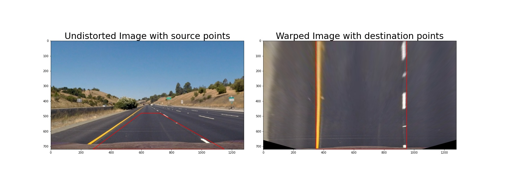
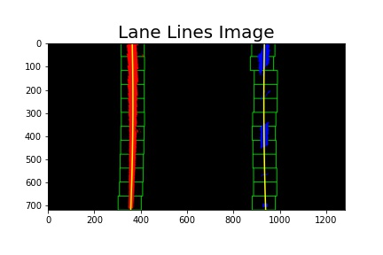
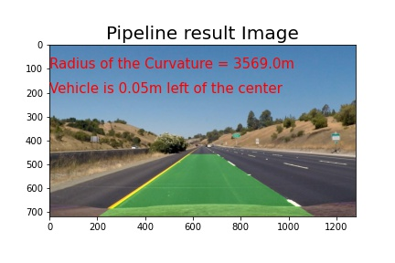

Advanced Lane Finding Project
The goals / steps of this project are the following:
To accomplish with the project goals, presented above, I divided the project development in the four following phases:
1 - Camera Calibration. Calculate the camera matrix and distortion coefficients using the chessboard images provided in "camera_cal" folder
2 - Build a Lane finding Pipeline for a single image
3 - Build a Lane finding Pipeline for video
4 - Reinforce the video Pipeline using the provided challenge videos
The code for this step is contained in the third code cell of the IPython notebook located in "main.ipynb".
I start by preparing "object points", which will be the (x, y, z) coordinates of the chessboard corners in the image. Here I am assuming the chessboard is fixed on the (x, y) plane at z=0, such that the object points are the same for each calibration image. Furthermore I am counting (9,6) corners on each image. Thus, objp is just a replicated array of coordinates, and objpoints will be appended with a copy of it every time I successfully detect all chessboard corners in a test image, using the cv2.findChessboardCorners() function over the gray scale of the test image. imgpoints will be appended with the (x, y) pixel position of each of the corners in the image plane with each successful chessboard detection.
After completing the search of the chessboard corners of all test images, I then used the output objpoints and imgpoints to compute the camera calibration and distortion coefficients using the cv2.calibrateCamera() function. I applied this distortion correction to the test image using the cv2.undistort() function to verify that all process is correct. An example of the result obtained is:
To avoid running every time this cell, I stored the camera calibration and distortion coefficients into the file camera_coeff.pkl so that next time I just have to load the file.
In this phase, the following steps were performed, first applied to the straight lines images then to the other test images: * Read and apply a distortion correction to the image. * Use color transforms, gradients, etc., to create a thresholded binary image. * Apply a perspective transform to rectify binary image ("birds-eye view"). * Detect lane pixels and fit to find the lane boundary. * Determine the curvature of the lane and vehicle position with respect to center. * Warp the detected lane boundaries back onto the original image. * Output visual display of the lane boundaries and numerical estimation of lane curvature and vehicle position.
The pipeline function calls process_image (6th code cell of the IPython notebook located in "main.ipynb") which was built step by step. Its arguments are:
* image - the image object (read from`'mpimg.imread')
* fname - the image name for saving purposes
* mtx, dist - camera matrix and distortion coefficients calculated on phase 1
* M, M_inv - transform matrix M and inverted transform matrix M_inv. These matrixes were first determined on step C but then removed from this pipeline and included here as argument. Now they are calculated on 5th code cell of the IPython notebook located in "main.ipynb".
On 7th code cell of the IPython notebook located in "main.ipynb", the images variable is a list of test images. Looping through that list, the image is read through the function mpim.imread which provide an image in RGB color channel. Then this image is passed as argument to the function process_image.
The distortion correction to the images is done by function undistort_image defined on file helper_functions.py. This function uses cv2.undistort to perform the distortion correction using the camera matrix and distortion coefficients passed as argument.
A result of this step is:
The approach to this step was to tune separately the threshold values of all binary images using the color transform or gradients and then combine all of them. The functions used on this process are defined on file helper_functions.py (abs_sobel_thresh, mag_thresh, dir_threshold, hls_select and hsv_select)
abs_sobel_thresh applies Sobel x or y, takes an absolute value and applies a threshold.
mag_thresh applies Sobel x and y, computes the magnitude of the gradient and applies a threshold.
dir_threshold applies Sobel x and y, computes the direction of the gradient and applies a threshold.
hls_select converts to HLS color space and separate the S and L channel and applies a threshold to each channel.
hsv_select converts to HSV color space and separate the S and V channel. For both channels, applies an Adaptive Histogram Equalization using cv2.createCLAHE to increase the contrast of the image. Then for S and V channel applies a threshold. Note that the S channel is used together with a second threshold for V channel. This was necessary to detect yellow lines on channel video frames.
The final result is a combination of L/S-channel plus S/V-channel binary image plus magnitude and direction gradients.
The result of this combination is the binary image called binary_image calculated as:
binary_image[(hsv_colors_binary == 1) | (hls_colors_binary == 1) | ((mag_binary == 1) & (dir_binary == 1)) ] = 1
The threshold values was defined by trial error over the test images and some video frames. Here's an example of my output for this step.
The code used to obtain the transform matrix M and M_inv needed to perform perspective transform to the image is presented in the 5th code cell of the IPython notebook located in "main.ipynb". The test image straight_lines1 was used to defined the source and destination points. I explored the image using a image editor and after several attempts, I defined the source (src) and destination (dst) points as:
src = np.float32([[195, 720],[1125, 720],[578, 460],[705, 460]])
dst = np.float32([[350, 720],[950, 720],[350,0],[950,0]])
Withe the source and destination points, I got the transform matrix M using the src and dst points cv2.getPerspectiveTransform(src, dst) and the invert transform matrix M_inv using the function cv2.getPerspectiveTransform(dst, src)
I verified that my perspective transform was working as expected by drawing the src and dst points onto the test image straight_lines1 and its warped counterpart to verify that the lines appear parallel in the warped image.

On the pipeline, the transform matrix M and M_inv are passed as argument to the function process_image and the perspective transform is done calling the function cv2.warpPerspective.
This step is performed on function fit_polynomial which take as argument the binary_warped image and return 6 objects:
* out_img - warped image with the polynomial lines for the left and right lanes (yellow) and the x,y points used to fit that polynomial lines (red for left lane and blue for right lane)
* left_fit, right_fit - polynomial coefficients for left and right polynomial lines, respectively
* left_fitx, right_fitx - x points of the left and right polynomial lines, respectively
* ploty - y points of the left and right polynomial lines (these values are the same for left and right lines)
The function fit_polynomial is defined on file helper_functions.py.
The first step is to find the binary image pixels with coordinates (x,y) needed to fit a 2nd order polynomial line. This step is done by the function find_lane_pixels which use the sliding window method and works as follows:
After getting the left and right line pixel positions, returned from function find_lane_pixels, I fit a second order polynomial to each lane using np.polyfit function and then I generate the x and y values of that polynomial line. For visualization I plot that x and y values of both left and right lanes. These lines are presented at yellow color.
An example of the result image is:

After detecting the left and right lanes and fit a second order polynomial to each, I determine the curvature of the lane in meters unit on function measure_curvature_real defined on file helper_functions.py. In this function, I first convert the polynomial coefficients in pixel units to meter using the conversions defined on helper_functions.py:
ym_per_pix = 30/720 # meters per pixel in y dimension
xm_per_pix = 3.7/600 # meters per pixel in x dimension
Then I apply the following formulas:
a_m = a_p(xm_per_pix/ym_per_pix*2); b_m = b_p * (xm_per_pix/ym_per_pix)
After that I calculate the curvature of each lane as: R = ((1 + (2ayym_per_pix + b)2)(3/2))/(np.abs(2a))
The curvature of the lane is then defined as an average of the two curvatures.
The vehicle position with respect to center of the lane is calculated on function measure_rel_vehicle_position defined on file helper_functions.py. In this function, the x position of each lane lines at the bottom of the image are calculated. The center of the lane is calculated as the point in the middle of that two x position points. The vehicle position is defined as being on the middle of the image width. The relative position is then calculated as the difference of that two values.
The conversion to meter unit is also done using the conversion xm_per_pix.
Results obtained:
For validation, the left and right curvatures are printed for each image as well as the lane curvature and the vehicle position with respect to center.
The curvature values for the test images were calculated around 1000 m, except for the straight lines were the curvature values can be higher than 1000 m.
The vehicle position with respect to center for the test images were calculated around 0.04m to 0.41m left of the lane center.
With the lane boundaries detected, a binary image is created to draw the lane lines for output display. But first I create the lane lines and then warp back to the original image space. So the next steps are done:
* Create an image to draw the lines on
* Recast the x and y points into usable format for cv2.fillPoly
* Draw the lanes onto the warped blank image
* Warp the blank back to original image space using inverse perspective matrix (M_inv) passed as argument on the function cv2.warpPerspective
To display the original image with the lane boundaries and numerical estimation of lane curvature and vehicle position, I combine the unwarped binary image defined on previous step (F) with the original image. This combination is done using the function cv2.addWeighted.
Moreover I add two texts on function save_pipeline_image. These two text have the information about numerical estimation of the lane curvature and vehicle position.
This pipeline is defined in the 6th code cell of the IPython notebook located in "main.ipynb" on function process_image. This function calls several functions to plot and save the resulted image. These results are stored on folder /output_images/test_images. This pipeline is called for all test images on 7th code cell.
An example of the pipeline result over a test image is:

Taking into account the Pipeline built on phase 3, two classes frame and line were defined on files frame.py and line.py, respectively. These two classes were built to process each frame of the video at a time.
A description of each class is presented below:
frameThe class frame holds the attributes and methods with respect to each frame of the video. The __init__ function initializes the variables and __call__ performs the lane finding pipeline, basically the same as the one built on phase 3.
The main differences are:
* Sanity check was added to validate and control how the algorithm is performing
* Add the function search_around_poly to each lane when the lanes on previous frame were found and the frame passed on all sanity checks. This function is a method of the line class.
* The pipeline step D.Detect lane pixels and fit to find the lane boundary was split in two parts. First part try to find the starting point for the left and right lines and the second part is the line method find_base_lanes_position.
Important to note that two attributes (self.left_line and self.right_line) of this class are an instance of the class line. These two attributes are the objects which represent the left and right line.
lineThe class line holds the attributes (hyperparameters and some variables to control the status of the lane) and methods with respect to each lane line.
The methods of this class performs majority part of the pipeline step D. Detect lane pixels and fit to find the lane boundary regarding to each lane line.
* find_lane_pixels finds the x and y pixels for the lane line. It uses sliding windows around a starting point which are passed as argument
* update_poly update the poly line coefficients by appending the polynomial x points to a list "recent_xfitted" and calculate the average x values of the fitted line over the last 'self.n_iteration' iterations.
* first_fit_polynomial fits a polynomial with order "order" for the lane line based on the x,y pixels which fall on sliding windows.
* search_around_poly fits a polynomial with order "order" for the lane line based on the x,y pixels which are around a lane line detected on previous frame.
Here's a link to my video result
One improvement I did on the pipeline was on function find_base_lanes_position defined on file frame.py. Instead of just considering the highest peaks of the histogram, I created a list of highest left and right peaks and then selected the peaks each are roughly spaced by "lane width" and are closest to the image center.
I also changed the pipeline to handle with lane lines fitted by a polynomial line with order higher than 2.
On find_lane_pixels function of the line class, I avoided images when the nonzero pixels in x and y within the window are fewer than self.minpix in four consecutive windows. In that case I consider the image a bad candidate to fit a lane line. This was important when the algorithm could not detect lines in shadows zone.
Here's a link to my challenge video result
Here's a link to my harder challenge video result
The pipeline works pretty well for the first video. After the improvements, the pipeline is not working bad on the first challenge videos. However for the harder challenge video, it is not capable to detect correctly the lanes. It needs to be able to detect strong curve lanes. On that cases, the nonzero pixels in y coordinates, doesn't cover all image height. I tried an upgrade to the algorithm by considering a small fit line but I struggled how to add it to the last n iterations.
Other improvement for this algorithm could be handle more efficiently with shadow and brightness. Some binary images have noise resulted by that.
Other improvement could be considering the angle of the camera related to the road as well as its variation. Sometimes the perspective transform applied to the each frame is not so good.